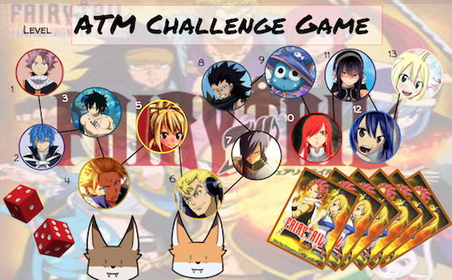
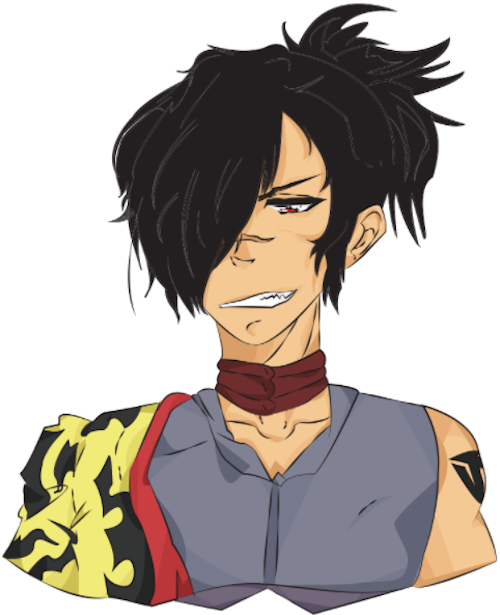

All About ATM
Sixth Grade
Fresh out of elementary, I was excited and curious to the things we would learn in ATM. I learned a multitude of topics during my first year in the program that still help me and keep me informed now. To list off, we learned typing, microsoft word, animations, infographics, flyers, and ThingLink. The picture at the bottom was an end of the year project in sixth grade, where we had to make a board game about our growth and progress from the beginning of the year to the end. Making this was incredibly fun and challenging at the time, but now that I look back on it I can't help but be amused at the theme of the board game, and the fact that if I made one of these now, it would take less time.

Seventh Grade
After sixth grade, I was told that in seventh grade we would be doing graphic design. I was happy at the prospect that I would finally be able to use and get to learn some programs that have been uesd a lot for digital art (Adobe Photoshop and Illustrator). My experience certainly didn't disappoint. That was only the first semester, though. In the second half of the school year, I started to learn about architecture and how people plan to make rooms/buildings. I admit, learning that was not as much fun as graphic design, but the programs used were a great experience to use (Sketchup and Floorplanner). Towards the end of the year we got a taste of how coding worked by doing some Karel Coding to help us prepare for eighth grade. The picture at the bottom is a drawing I did using my skills in Adobe Illustrator (Fairy Tail character: Rogue Cheney); that was my first time using a program like that, so I was proud that I got it done well. Now that I'm older, though I could see that I have a lot of room to improve.

Eighth Grade
In eigth grade, we learned how to code our own website. We first took steps to help us, by doing lessons assigned to us by Dash. Dash is a website that helps us learn how to code. There the lesson plans taught me how to set up my website, and change its layout and style. Thanks to Dash I'm able to code this website, too! This is the very first webpage I made in Dash (not the website)

Reflection of the Program
I’m so grateful for all the things taught to me. With out ATM, I wouldn’t know that much about the topics listed above. The program not only helped me during everyday life, but it allowed me to have a better understanding of technology, which is something that I enjoy learning about.